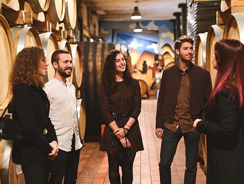
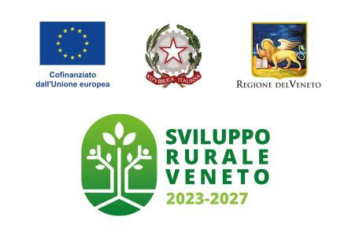
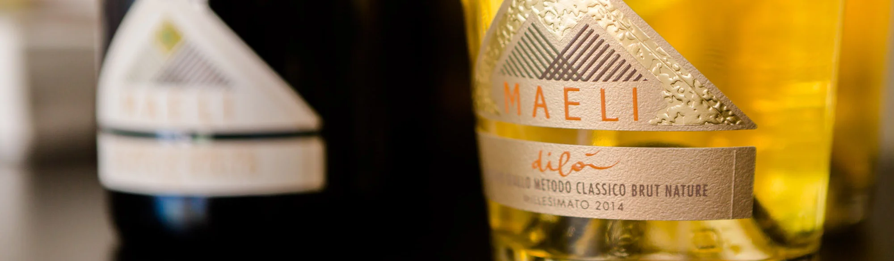

Fior d’Arancio DOCG
至少95% Moscato Giallo。它同时有干白、甜起泡与 Passito（风干甜酒）：花香明显，干型适合开胃，甜型适合餐后。喜欢果香和香气型酒的人最容易爱上。

Torreglia 周边 · 5–30分钟
全家想要的不是品酒课 KPI，而是葡萄园、当地人、好吃的东西和一段舒服的下午。下面按六种明确用途，把酒、价格和一天怎么走说透。
如果只去一家、想真正理解这片丘陵，订 Ca’ Lustra €30 / 人的6款酒＋葡萄园酒窖；如果父母更在意“边吃边懂”，订 Il Pianzio €30 / 人的5酒＋本地食物＋甜点；如果要把 Fior d’Arancio 喝明白，才选 Maeli €40 / 人。
vendemmia（葡萄采收）期间酒庄会先忙采收，临时到店不稳。建议现在先锁一家、留一家作备选；不用连续喝两家。预约邮件请写清4位成人、英语讲解、能否进 fruttaio（晾晒葡萄的风干房） / 酒窖、停车与当日采收是否影响路线。
Colli Euganei 不是只有一瓶“当地白”。最值得的是用一场品鉴比较香气型白与火山丘陵红酒；知道下面三组词，现场就不会只听品牌故事。
至少95% Moscato Giallo。它同时有干白、甜起泡与 Passito（风干甜酒）：花香明显，干型适合开胃，甜型适合餐后。喜欢果香和香气型酒的人最容易爱上。
本地 Glera / Serprina 做成的轻盈细泡，常有苹果、梨和白花，通常清爽不重，最适合午餐前或配冷盘。它不是一句“小 Prosecco”就能概括。
Merlot、Cabernet Sauvignon、Cabernet Franc 与 Carménère 的本地波尔多系混酿。酒体更厚，适合烤肉和陈年奶酪；偏爱干红的人可比较 Ca’ Lustra Sassonero 与 Vignalta Gemola。
先看空间，再读选择：Ca’ Lustra 重内容，Quota 101 像邻居，Maeli 更轻盈、视觉和香气更突出。



01是这次四人家庭的综合首选，其余分别解决配餐、香气酒、距离、干红和完整午餐。价格按酒庄当前官方页面核对；未公开品鉴价的直接标为“预约询价”。
地质、传统葡萄与六款酒，约2小时
最适合把 Colli Euganei 真正讲明白的一家：葡萄园、酒窖、六款酒、奶酪与自家橄榄油都有。请在预约里要求品鉴酒组尽量包含 Bianco、干型 Moscato “A Cengia”、Sassonero 与 Fior d’Arancio Passito（风干甜酒）。
不是空腹上课：本地冷盘、奶酪、橄榄油与甜点一起上
父母若不想听抽象“风土”、而想边吃边理解酒，这里比“只倒几杯”的酒庄更合适。建议 Euganea 套餐，指定比较 Serprino、干型 Pianzio Aromatico、Cabernet 与 Fior d’Arancio。
把同一 Moscato Giallo 的干、泡、甜喝成一条线
更适合偏好花香、起泡酒与拍照体验的人。Yellow Muscat Road 会喝到 Fior、Dilà、Dilì、Bianco Infinito 与 Dilorò 等不同表达；如果家里只爱干红，改订 Moscato Giallo & Carménère。
Torreglia 自己的有机小酒庄
请直接要求一组 Serprino → Fior d’Arancio Secco → Malterreno 白 → Poggio Ameno 红。它的价值是近、真实和可以从自家所在村镇开始认识产区，不是豪华酒庄秀。
用 Gemola 判断 Colli 红酒能走多远
最值得比较 Gemola（Merlot＋Cabernet Franc）与 Arquà Rosso 的不同土壤表达，再尝 Carménère Riserva 或 Alpianae Passito（风干甜酒）。它更偏收藏与干红，接待体验没有前几家那么轻松。
别只把它写成午餐：这里自己也做酒
适合父母想认真坐下吃一顿、年轻人仍想喝本地酒。点 Serprino、Fior d’Arancio 与 Vegro Riserva 配当季菜即可；若要完整理解酒的导览，仍然不如 Ca’ Lustra。
适合9/16刚到后的恢复日：先用一家离家很近的酒庄建立本地坐标，再吃一顿真正的Padovana午餐；下午三点已经可以回家。
已订 Quota 101 Postcard 10:30场：4位、英语、€25/人，并再次确认停车。
葡萄园、酒窖、5款与本地小食；指定比较Serprino、Fior Secco、Malterreno与一款红。
不再加Villa dei Vescovi；Postcard已是完整两小时，给13:00订位留足山路时间。
点salumi Euganei €11、Serprino松露risotto €18/人或baccalà €22。
第一天不追日落与第二座村；下午留给休息、买菜或spa。
约 €220–290 / 四人：Quota 101 Postcard €100、午餐约€100–160、交通与咖啡约€20–30；不含买酒。
内容最足，也最推荐。Ca’ Lustra负责把酒讲清，Arquà负责村庄与午餐，Vignalta只进wine shop买一瓶，不做第二轮正式品鉴。
提前吃早餐、带水；乡间山路不要为了赶10:30 slot超车。
6款＋葡萄园酒窖。四人€120；自驾时必须指定一位全程零饮酒司机，或提前预约接送。
Arquà正式午餐，按€40–55/人估算；不要午餐再开整瓶酒。
Petrarch墓、老街与橄榄小店；故居只有全家真感兴趣才进。
只买Gemola/Alpianae并请店员解释两种土壤，不再做tasting。
约17:40到家。若改订Maeli 18:00，就必须取消上午Ca’ Lustra。
不含买酒和包车。公开价格与餐费估算分开写；如果没人愿意全程零饮酒，请另加接送预算。
如果全家想在一个下午比较多家酒庄，用官方小火车比自己开车聪明：约4小时串5家，成人€35，四人€140，含车、杯与18枚兑换券；每30分钟一班，必须预约。
价格、时长和开放信息核对自 Ca’ Lustra、Il Pianzio、Maeli、Quota 101、Vignalta、Sengiari 与 Vo’ Festa dell’Uva 2026。车程与普通餐费均标为估算；采收季临时调整仍以确认邮件为准。